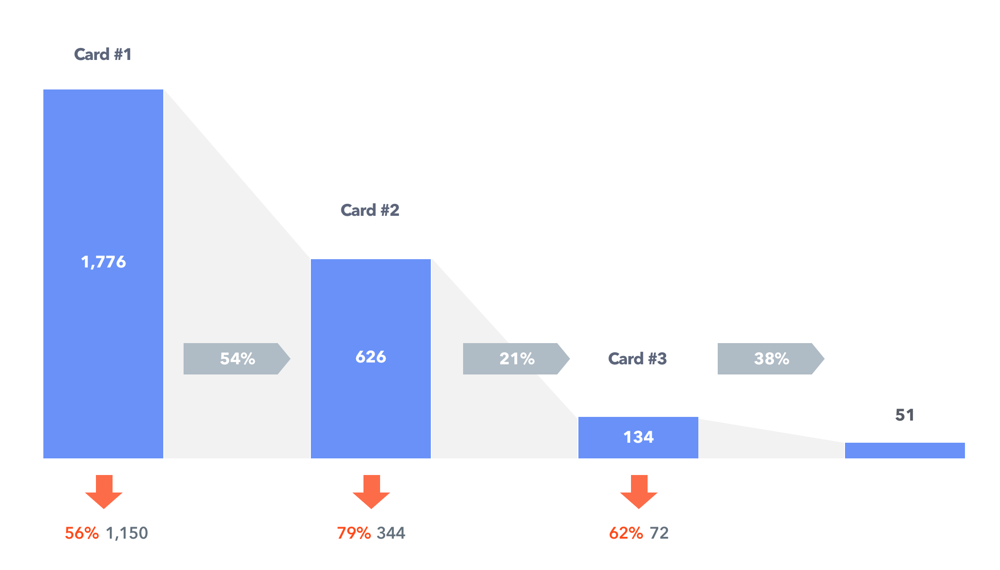

User Scenario
Information Architecture
Prototyping
UI/UX Design
User Test
Duration
Aug 2016 - Sep 2016
Switcher promotional video in YouTube
Switcher is a smart light controller targeting a single or a married couple household in South Korea. The target user is aged from 25 to 35 years old living in a studio or one bed apartment. By hacking the lifestyle of the target user, Switcher has become the most affordable and intuitive smart home device in South Korea. It comes with a set of two velcro strips for easy installation and bluetooth pairing with smartphone to control the light.
Why I focused on Timer
Switcher is a rental service offering four paid subscription plans: monthly, annual, biannual and triennial plans. By trying Switcher for one month, users can decide if it is useful, select one of these four subscription plans to keep using or return Switcher to cancel automattic recurring montly subscription plan.
In August 2016, we ran several rounds of quantitive studies to discover what affects the trial-to-paid conversion rate, and finally found out the correlation between the number of users who use timer and the trial-to-premium conversion rate. 67.5% of a group of premium users were utilizing more than one timer. In a meanwhile, only 35.3% of a group of users who returned Switchers after the free trial didn't set any timer at all.
Percentage(%) of users utilizing a timer
subscribed Switcher after the free trial
Users who returned Switcher after 1-month Free Trial
Based on the result above, we made a hypothesis that if a user installed and utilized one or more timer, she wants to use it longer than a month cause it solves a problem in her lifestyle. To validate the idea, we ran another suvery to paid users asked if they used a timer and which subscription plan they chose.
Paid Users Timer and Price Plan
Problem
Users aren't aware of timer and can't find any information about timer in app.
Even though we always put "switcher timer" in marketing material and website, still there are a lot of users who doesn't use timer even though it can maximize their smart home device.
So we called them asked why they don't use a timer and here are main four reasons why they don't use it.
“I didn’t know about timer”
“Just didn’t do it.”
“I don’t know when to use Switcher Timer except morning alarm.”
“I don’t understand the concept of timer”
Design Solution . Version 1
Pop-Up Modal
Switcher User cannot find a sufficient information about timer in the app.
Instead of making a full interactive onboarding on the first set-up, Pop-Up modal came out as a solution because it can be shown to users who've been using Switcher.
Higher Level Goal
To guide user to test and understand the concept of Switcher timer ✅
To suggest a timer use case other than morning-lit-up to user ☀️
To increase the converstion rate of free-to-paid ↗
To increase the average price of first payment after a free-trial ↗
Design Process
Design Process
I used inVsion to create rough prototypes. These rough prototypes were made for fast iteration and test by myself about timing and the flow of the pop-ups.
Visual Design Exploration
After getting a flow, I ran 3 rounds of user test with rough prototypes to check duration and affordance.
1. To check is users can recognize the message
2. To check if users are aware of the flow.
3. Check if users can remember the images
4. Finally, check if users are aware of Timer.
Timer Pop-Up #1
"Save Energy with Switcher"
↓
Timer Pop-Up #2
"First, let's set a timer to turn the light off 3 mins later!"
↓
Timer Pop-Up #3
"Great! Let's add one more timer. Turn off the light when your house is empty!"
üôåüèª
Tweaking Details with User Test
2 out of 5 testers remembered new use case about energy saving
1 out of 5 testers remembers new use about energy saving
2 out of 5 testers remembered new use case about energy saving
1 out of 5 testers remembers new use about energy saving
Result

Takeaways
Partnering closely with the marketer to discover about users' pain points by approaching different research methods including survey, interview, and Google Analytics
Prototyping and testing small scale of design to real people and getting actionable feedback
Overseeing the holistic in-App user experience from the notice to the exit
Designing infographics assets and pop-up modal user interface elements
What I could have done differently?
it was great oppourtunity for me to think holistic in-app experience.
Also, knowing how to change minial change to give impact was a big lesson for me